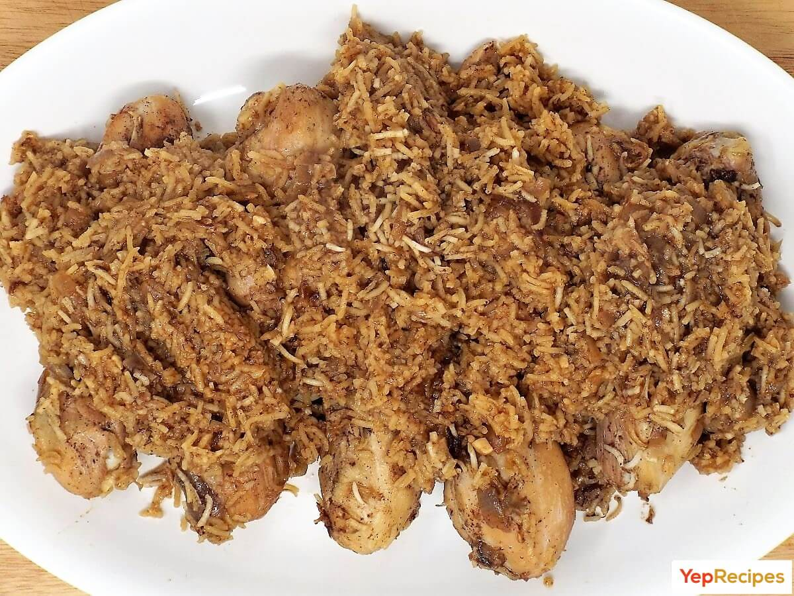

Pilau

Description
Pilau is a fragrant rice dish seasoned with spices and often cooked with meat or vegetables. It is a staple dish in many East African countries and is known for its rich flavor and aroma.
Ingredients
- 2 cups basmati rice
- 500g beef or chicken, cut into pieces
- 1 large onion, chopped
- 2 tomatoes, chopped
- 3 cloves garlic, minced
- 1 tablespoon ginger, grated
- 2-3 tablespoons vegetable oil
- 1 teaspoon cumin seeds
- 1 teaspoon coriander powder
- 1 teaspoon turmeric powder
- 1-2 whole cloves
- 2-3 cardamom pods
- Salt to taste
- 4 cups water or broth
- Optional: peas or carrots for added flavor
Steps
- Rinse the basmati rice in cold water until the water runs clear. Soak it in water for about 30 minutes, then drain.
- In a large pot, heat the vegetable oil over medium heat. Add the chopped onions and sauté until they are golden brown.
- Add the minced garlic and grated ginger, and cook for an additional 1-2 minutes until fragrant.
- Add the meat (beef or chicken) to the pot and cook until browned on all sides.
- Stir in the chopped tomatoes, cumin seeds, coriander powder, turmeric powder, cloves, and cardamom pods. Cook until the tomatoes soften and the spices are well combined.
- Add the drained rice to the pot and gently mix to coat the rice with the spices.
- Pour in the water or broth, add salt to taste, and bring to a boil.
- Once boiling, reduce the heat to low, cover the pot, and let it simmer for about 20 minutes, or until the rice is cooked and the liquid is absorbed.
- If using, add peas or carrots during the last 5 minutes of cooking.
- Remove from heat and let it sit covered for another 5-10 minutes before serving.
- Fluff the pilau with a fork and serve hot with your favorite side dishes or salad.